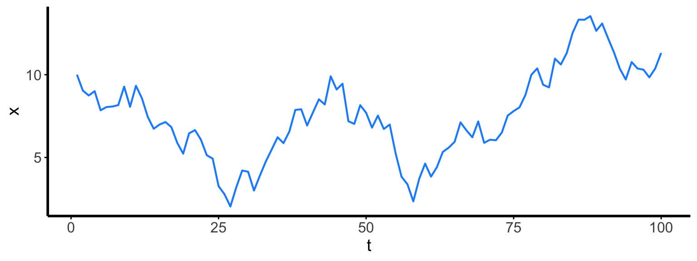

- In your group discuss what is wrong with the format of your data
- Create a repository for your metadata project
- ADD ALL MEMBERS AS COLLABORATORS
- Clone the repository to your local git
- Delegate jobs to group members:
- write readme describing the data
- reshape the data into a tidy form and change to csv
- read the data into R making sure it is in the right form
- Each role will push changes to a new branch of the main branch
- As a group pull the changes merging the branches to the main branch
2023-11-27
From last time: Practice making tidy data
What do I mean by functional coding?
- “… a style of problem solving centred on functions.”
https://adv-r.hadley.nz/fp.html - R is better suited for this style, while in other languages (e.g., python, C++) object-oriented might work better
- The overall thinking is the same: solve small sub-problems with individual functions (or object methods) and build up to larger problems
Why and when
Why use functions?
- Create fewer errors
- Improve readability of code
When to use functions?
- Simple: when you’re doing the same thing multiple times
Small errors are easy to make and can be annoying to find
lm_mpg <- lm(mpg ~ factor(cyll), mtcars)
Error in eval(predvars, data, env): object 'cyll' not found
lm_hp <- lm(hp ~ factor(cyl), mrcars)
Error in eval(mf, parent.frame()): object 'mrcars' not found
lm_disp <- lm(mpg ~ factor(cyl), mtcars)
The problem is even worse when you have lots of copying
lm(mpg ~ cyl + disp + hp + drat, mtcars) lm(mpg ~ cyl + disp + hp + wt, mtcars) lm(mpg ~ cyl + disp + drat + wt, mtcars) lm(mpg ~ cyl + hp + drat + wt, mtcars) lm(mpg ~ disp + hp + drat + wt, mtcars) lm(disp ~ mpg + cyl + hp + drat, mtcars) lm(disp ~ mpg + cyl + hp + wt, mtcars) lm(disp ~ mpg + cyl + drat + wt, mtcars) lm(disp ~ mpg + hp + drat + wt, mtcars) lm(disp ~ cyl + hp + drat + wt, mtcars) lm(hp ~ mpg + cyl + disp + drat, mtcars) lm(hp ~ mpg + cyl + disp + wt, mtcars) lm(hp ~ mpg + cyl + drat + wt, mtcars) lm(hp ~ mpg + disp + drat + wt, mtcars) lm(hp ~ cyl + disp + drat + wt, mtcars)
Compare these two approaches
lm_mpg <- lm(mpg ~ factor(cyl), mtcars) lm_disp <- lm(disp ~ factor(cyl), mtcars) lm_hp <- lm(hp ~ factor(cyl), mtcars) lm_drat <- lm(drat ~ factor(cyl), mtcars) lm_wt <- lm(wt ~ factor(cyl), mtcars) lm_qsec <- lm(qsec ~ factor(cyl), mtcars) lm_vs <- lm(vs ~ factor(cyl), mtcars) lm_am <- lm(am ~ factor(cyl), mtcars) lm_gear <- lm(gear ~ factor(cyl), mtcars) lm_carb <- lm(carb ~ factor(cyl), mtcars)
versus
y_pars <- c("mpg", "disp", "hp", "drat",
"wt", "qsec", "vs", "am",
"gear", "carb")
all_lm <- map(y_pars, cyl_model)
Basics of functions in R
subtract <- function(x, y = 1) {
z <- x - y
return(z)
}
subtract(1)
[1] 0
subtract(x = 1)
[1] 0
subtract(1, 2)
[1] -1
subtract(y = 1, x = 2)
[1] 1
R function environments
subtract <- function(x, y = 1) {
z <- x - y
return(z)
}
x <- 465 z <- 7 subtract(x = z)
[1] 6
x
[1] 465
z
[1] 7
subtract()
Error in subtract(): argument "x" is missing, with no default
Vectorization in R
R can often operate on vectors with no extra effort
x <- 1:5 y <- 9:13 x + y
[1] 10 12 14 16 18
x^y
[1] 1 1024 177147 16777216 1220703125
subtract(x, y)
[1] -8 -8 -8 -8 -8
Flexibility of lists
x <- numeric(2) x[[1]] <- matrix(0, 0, 0)
Error in x[[1]] <- matrix(0, 0, 0): replacement has length zero
x <- as.list(numeric(3)) x[[1]] <- matrix(0, 0, 0) x[[2]] <- data.frame() x[[3]] <- runif(3) x
[[1]] <0 x 0 matrix> [[2]] data frame with 0 columns and 0 rows [[3]] [1] 0.2655087 0.3721239 0.5728534
The map functionmap images from https://adv-r.hadley.nz/functionals.html
map images from https://adv-r.hadley.nz/functionals.html- Allows you to apply a function to multiple inputs
- From the
purrrpackage (which is loaded withtidyverse)


map with 2+ vectors


map with extra argument(s)


Types of map functions
map returns a list
map(4:5, function(i) 1:i)
[[1]] [1] 1 2 3 4 [[2]] [1] 1 2 3 4 5
map_lgl(), map_int(), map_dbl() and map_chr() return a vector of indicated type
map_lgl(4:5, function(i) 4 < i)
[1] FALSE TRUE
map_dbl(4:5, function(i) 1 + i)
[1] 5 6
map2_chr(4:5, 5:4, function(i, j) paste(i, j))
[1] "4 5" "5 4"
General process to “functionalize” code
- Break problem into smaller sub-problems.
- For each sub-problem, write a function and test it.
- For writing each function…
- The main function code will include the commonalities between all situations.
- Features that aren’t common should be input to the function as arguments.
- If necessary, use smaller functions inside a higher-level function
How would you do this?
y_pars <- c("mpg", "disp", "hp", "drat",
"wt", "qsec", "vs", "am",
"gear", "carb")
all_lm <- map(y_pars, cyl_model)
## instead of a series of these:
lm_mpg <- lm(mpg ~ factor(cyl), mtcars)
lm_disp <- lm(disp ~ factor(cyl), mtcars)
# etc.
- Necessary output from function
cyl_model:lmobject - Commonalities:
lm(__ ~ factor(cyl), mtcars) - Difference: response variable
What problems do we need to solve?
## given this: "mpg" ## create this: lm(mpg ~ factor(cyl), mtcars)
- Combine parts of formula
- Convert string to formula
- Insert formula into
lm - Make output more readable (you’ll see what I mean)
Combine parts of formula
y <- "mpg" ## to "mpg ~ factor(cyl)"
form_str <- paste(y, "~ factor(cyl)") form_str
[1] "mpg ~ factor(cyl)"
Convert string to formulathis step is not necessary for lm, but can be for other functions
lm, but can be for other functionsform_str <- paste(y, "~ factor(cyl)") class(form_str)
[1] "character"
For converting, look for functions starting with as.
form <- as.formula(form_str) form
mpg ~ factor(cyl)
class(form)
[1] "formula"
Insert formula into lm
form
mpg ~ factor(cyl)
# create object equivalent to lm(mpg ~ factor(cyl), mtcars)
Call:
lm(formula = mpg ~ factor(cyl), data = mtcars)
Coefficients:
(Intercept) factor(cyl)6 factor(cyl)8
26.664 -6.921 -11.564
mod <- lm(form, mtcars) mod
Call:
lm(formula = form, data = mtcars)
Coefficients:
(Intercept) factor(cyl)6 factor(cyl)8
26.664 -6.921 -11.564
Make output more readable
mod
Call:
lm(formula = form, data = mtcars)
Coefficients:
(Intercept) factor(cyl)6 factor(cyl)8
26.664 -6.921 -11.564
mod$call
lm(formula = form, data = mtcars)
Not very informative!
mod$call$formula <- form mod
Call:
lm(formula = mpg ~ factor(cyl), data = mtcars)
Coefficients:
(Intercept) factor(cyl)6 factor(cyl)8
26.664 -6.921 -11.564
This is what it looks like together
cyl_model <- function(y) {
form_str <- paste(y, "~ factor(cyl)")
form <- as.formula(form_str)
mod <- lm(form, mtcars)
mod$call$formula <- form
return(mod)
}
This is what it creates
all_lm <- map(y_pars, cyl_model) all_lm[1:2]
[[1]]
Call:
lm(formula = mpg ~ factor(cyl), data = mtcars)
Coefficients:
(Intercept) factor(cyl)6 factor(cyl)8
26.664 -6.921 -11.564
[[2]]
Call:
lm(formula = disp ~ factor(cyl), data = mtcars)
Coefficients:
(Intercept) factor(cyl)6 factor(cyl)8
105.14 78.18 247.96
How could we alow X variable(s) to change while keeping our previous code working?
How could we alow X variable(s) to change while keeping our previous code working?
cyl_model <- function(y, x = "factor(cyl)") {
form_str <- paste(y, "~", x)
form <- as.formula(form_str)
mod <- lm(form, mtcars)
mod$call$formula <- form
return(mod)
}
Activity: Cleaning weird files
We have a folder full of output files like this:
## Data provided by X Ozone,Solar.R,Wind,Temp,Month,Day 41,190,7.4,67,5,1 NA,NA,14.3,56,5,5 --- instrument error 28,NA,14.9,66,5,6 23,299,8.6,65,5,7 --- instrument error NA,194,8.6,69,5,10 ## Year observed: 1990
Cleaning weird files (2/4)
Problems:
- Remove unnecessary lines from each file.
- Create a single data frame from multiple cleaned files.
Input information:
- Vector of file names (
file_names)
file_names <- c("file1.out", "file2.out")
Get the files themselves from…
- Canvas (Files > 04_functionalR)
- https://github.com/lucasnell/pranga/tree/main/weird-files
Cleaning weird files (3/4)
Clean a single CSV file to a string:
clean_str <- function(file_name) {
lines <- read_lines(file_name)
lines <- lines[!str_detect(lines, "^\\#\\#|^--")]
lines <- lines[lines != ""]
cleaned_str <- paste(lines, collapse = "\n")
return(cleaned_str)
}
Cleaning weird files (4/4)
Clean multiple files then combine them into a single data frame:
clean_df <- function(file_names) {
cleaned_strs <- map(file_names, clean_str)
data_frames <- map(cleaned_strs, read_csv, col_types = cols())
combined_df <- bind_rows(data_frames)
return(combined_df)
}
clean_df(file_names)
# A tibble: 12 × 6 Ozone Solar.R Wind Temp Month Day <dbl> <dbl> <dbl> <dbl> <dbl> <dbl> 1 41 190 7.4 67 5 1 2 NA NA 14.3 56 5 5 3 28 NA 14.9 66 5 6 4 23 299 8.6 65 5 7 5 NA 194 8.6 69 5 10 6 7 NA 6.9 74 5 11 7 11 290 9.2 66 5 13 8 14 274 10.9 68 5 14 9 18 65 13.2 58 5 15 10 6 78 18.4 57 5 18 11 30 322 11.5 68 5 19 12 11 44 9.7 62 5 20
More information
- T Mailund (2017). Functional Programming in R. https://doi.org/10.1007/978-1-4842-2746-6
- Iteration (in R for Data Science) https://r4ds.hadley.nz/iteration.html
- Functional Programming (in Advanced R) https://adv-r.hadley.nz/fp.html
- Functionals (in Advanced R) https://adv-r.hadley.nz/functionals.html
Online, this lecture also contains info on map alternatives
map alternatives
map alternatives (1/2): apply functions
- Similar to
mapfunctions, but in base R lapplyoutputs a listsapplycoerces to an arrayvapplycoerces to a specified typeapplymoves across indices of an array
lapply(4:5, function(i) 1:i)
[[1]] [1] 1 2 3 4 [[2]] [1] 1 2 3 4 5
sapply(4:5, function(i) 1 + i)
[1] 5 6
vapply(4:5, function(i) 1 + i, 1.0)
[1] 5 6
apply(matrix(1:6, 2), 1, sum)
[1] 9 12
map alternatives (2/2): for loops
- Especially useful when one iteration’s result depends on the previous iteration.
- Changes existing object(s).
x <- numeric(100)
x[1] <- 10
for (t in 2:length(x)) {
x[t] <- x[t-1] + rnorm(1)
}
